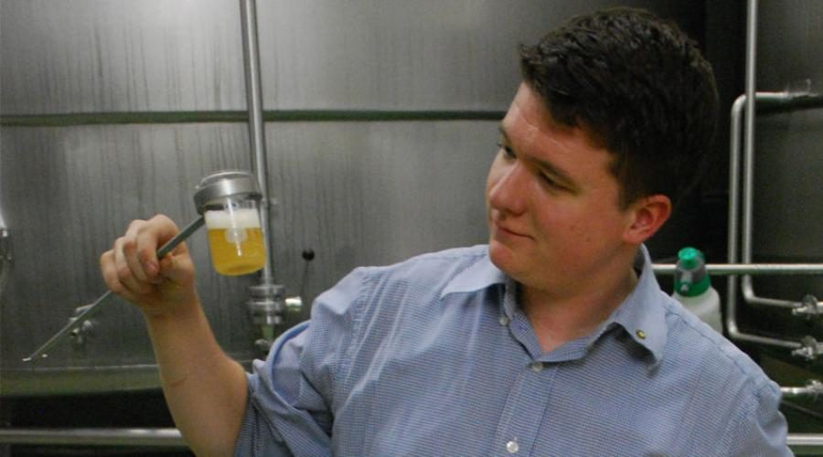
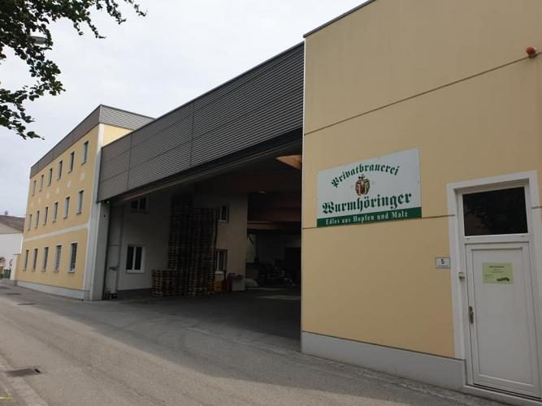
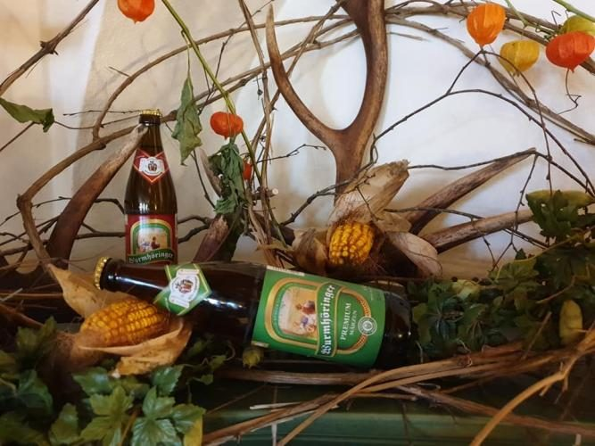
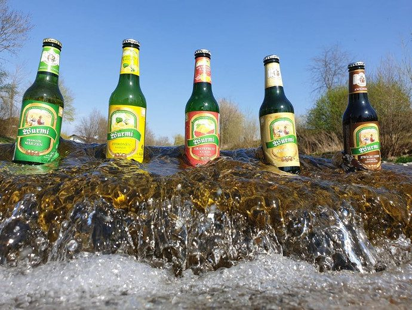

Wirtshaus-Tradition, stilvoll und ehrlich
Ein Braugasthof wie unserer lebt die Innviertler Wirtshaus-Tradition: gemütlich, ehrlich, sympathisch – und mit dem Bier aus dem eigenen Haus.
Wichtig ist uns „a guada Platz“
Ob traditionell, klein und fein oder unter freiem Himmel – im Haus finden Sie für jede Runde den richtigen Raum.
Braugaststube
Die traditionelle Stube des Hauses – der Platz für den Stammtisch, das Mittagessen und den Feierabend.
Schalander-Stüberl
Benannt nach dem Aufenthaltsraum der Brauer. Der passende Rahmen für kleinere Runden und Familienfeiern.
Gambrinus-Zimmer
Unser Zimmer für Gesellschaften, Vereine und Feiern mit Programm.
Gastgarten
In der warmen Jahreszeit der beste Platz für ein frisch gezapftes Bier.
Arkadenhof
Angenehm temperiert – auch dann noch, wenn es im Gastgarten zu heiß oder zu frisch wird.
Busse willkommen
Reisegruppen bewirten wir nach Voranmeldung gern. Anfrage über die Feier- und Gruppenanfrage.
Was bei uns auf den Tisch kommt
Wir haben uns der gesunden, bodenständigen Küche verschrieben, die ehrlich ist und hervorragend schmeckt. Saisonbewusst, abwechslungsreich, regional – und mit überlieferten Rezepten unserer Vorfahren.
- Bierspezialitäten aus der eigenen PrivatbrauereiVom Fass gezapft: unsere Märzen-, Pils- und Zwicklspezialitäten – siehe Biersortiment.
- Innviertler KnödelTraditionelle regionale Spezialität aus unserer Küche.
- Knusprige RipperlEin Klassiker des Hauses.
- BradlpartieBei Festivitäten besonders beliebt – ideal für größere Runden und Feiern.
Dazu kommen die wechselnde Speisekarte Sommer und das g’schmackige Mittagsmenü, das wir wöchentlich neu zusammenstellen. In dieser Vorschau sind beide bewusst ohne Preise abgebildet – im Live-Betrieb pflegt sie das Team direkt in der Website, tagesaktuell und ohne PDF-Download.

Für Körper, Geist und fürs Gemüt
Neben der Bewegung in der Natur ist die Ernährung der wichtigste Faktor für ein vitales Leben. Dabei darf es auch gerne geschmackvoll sein – das gehört zum guten Leben dazu.
Bei uns fühlt sich jeder rundum wohl, darauf achten wir besonders. Ob alt, ob jung, von hier oder von der Weiten: Stammgäste, Vereine, Ausflügler, Schnellentschlossene und alle anderen sind willkommen. Hauptsache, alle fühlen sich wohl.
Herzlichst, das Team vom Braugasthof

| Montag | 10:00–14:00 Uhr |
|---|---|
| Dienstag | 10:00–14:00 und 17:00–24:00 Uhr |
| Mittwoch | 10:00–14:00 und 17:00–24:00 Uhr |
| Donnerstag | 10:00–14:00 und 17:00–24:00 Uhr |
| Freitag | Ruhetag |
| Samstag | Ruhetag |
| Sonntag | Ruhetag |
| Mittags | 11:00–14:00 Uhr |
|---|---|
| Abends | 17:00–21:00 Uhr |
| Telefon | +43 7723 422 04 |
An ausgesprochen ruhigen Tagen behalten wir uns vor, den Gasthof schon vor der eigentlichen Sperrstunde zu schließen. Wir bitten um Verständnis.
Ein Blick ins Haus
